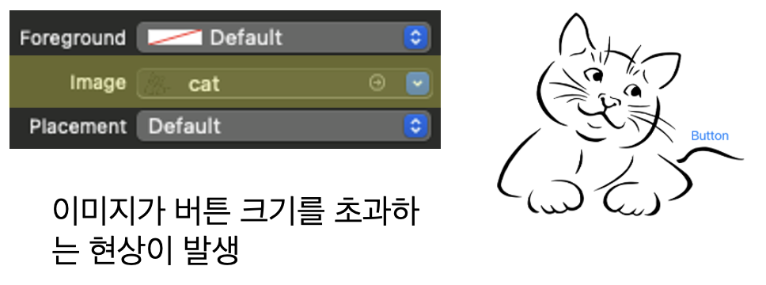
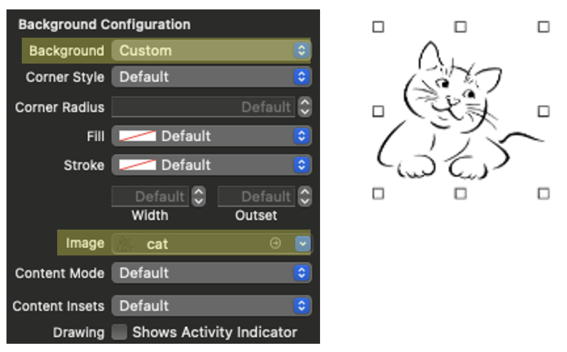

#setImage
UIButton Attributes Inspector에서
Button Image 속성에 바로 이미지를 대입하면 이미지가 버튼 위에 덮어씌워진다.
하지만 이때 이미지 크기는 버튼 크기에 맞춰 자동으로 변경되지 않고 이미지 원본 크기로 표시된다.
즉 위와 같은 방법으로 이미지를 적용 시 이미지가 버튼을 넘어 흘러버리는 현상이 발생한다.

물론 위와같은 현상이 잘못된 것은 아니고
만약 버튼 안에 글자 옆에 아이콘처럼 이미지를 대입하고 싶을 때는 적절한 방식이다.
#backgroundConfiguration
버튼 크기에 맞게 자동으로 이미지가 조절되도록 설정하고 싶다면 backgroundConfiguration 속성을 사용하면 된다.
우선 UIKit의 Background Configuration에서 Background 속성을 Custom으로 바꿔준다.
default (automatic)은 버튼 스타일이 IOS의 기본 시스템 스타일을 따라가기에
사용자가 원하는 대로 커스텀하기 위해서는 custom 속성으로 변경해야 한다.
custom 속성을 적용하면 배경색, 배경 이미지, 테두리 등을 프로그래머가 원하는 대로 설정 가능하다.
다음으로 Background Configuration 내부의 Image에서 이미지를 선택해 주면
아래처럼 버튼이 이미지로 대체되며 원하는 만큼 사이즈를 조절할 수 있다.
